1.第三届大学生校园媒体大赛数字创意类海报获奖
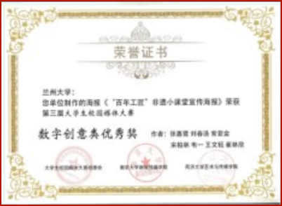
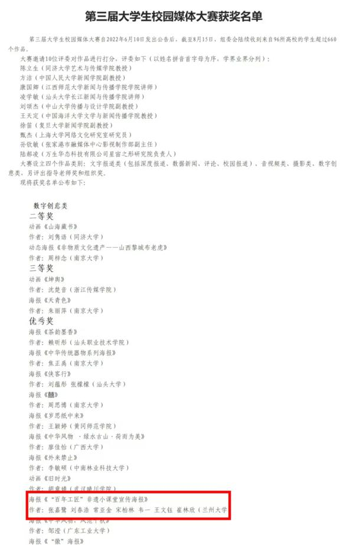
2.2022年兰州大学暑期“三下乡”社会实践成果“优秀成果”、“优秀团队”，团队队长获“优秀团队负责人”，团队成员获“优秀队员”
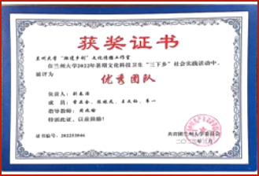
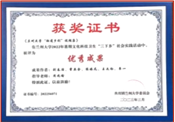
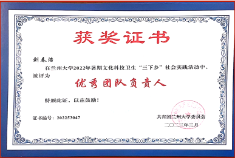
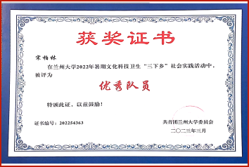
3.第六届甘肃省青年志愿服务项目大赛银奖
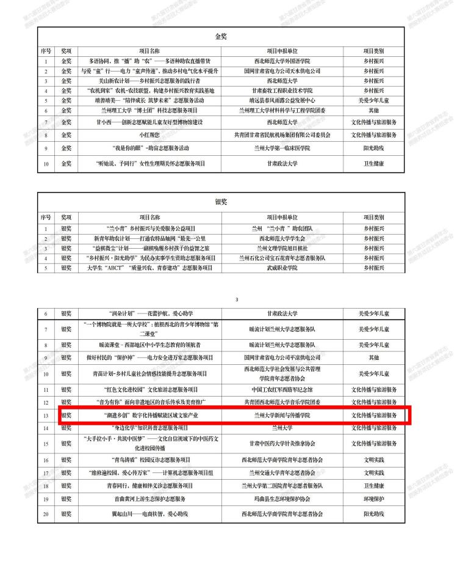
4.第九届中国国际“互联网+”大学生创新创业大赛甘肃省分赛决赛金奖
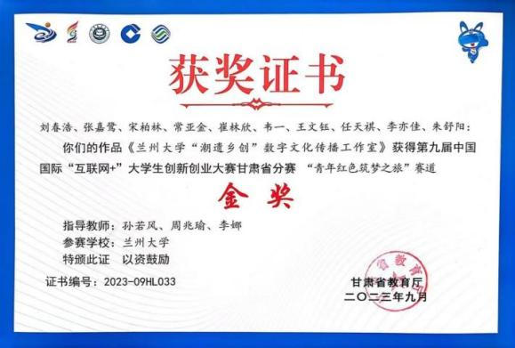

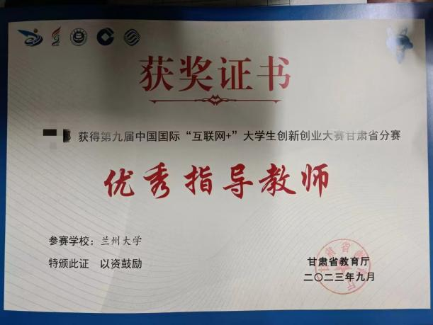
5.2022年第八届全国大学生暑期实践活动成果TOP10
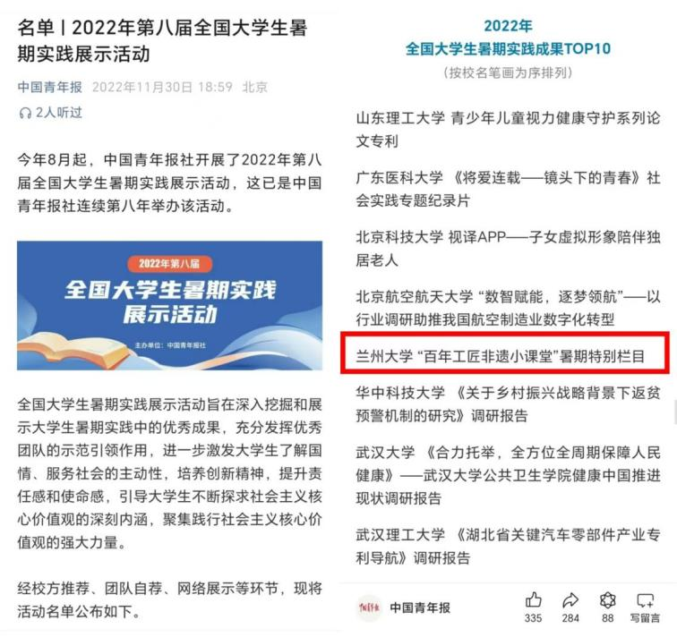
6.2022年甘肃省大中专学生志愿者暑期文化科技卫生“三下乡”社会实践活动优秀品牌项目
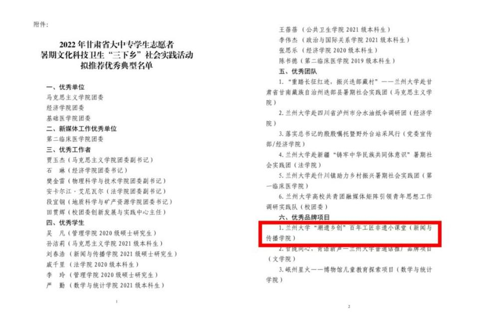
7.2024年9月在中华全国新闻工作者协会举办的“印象中国”短视频征集活动进行展播
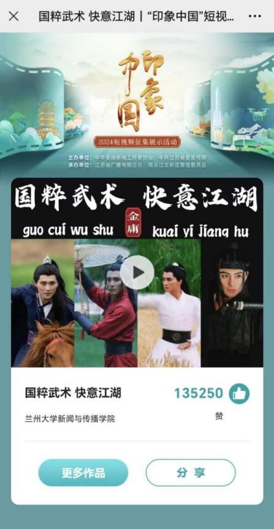
8.被兰州市电视台评为“优秀学生记者”
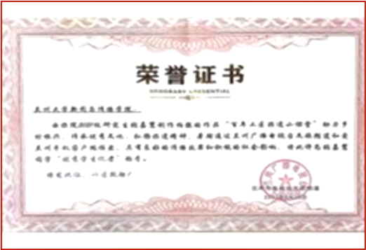
9.团队产出作品《薪火·信仰》话剧团课作品荣获甘肃省“矢志艰苦奋斗 传承陇人品牌”优秀话剧团课评选二等奖
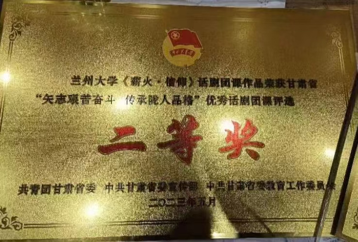
10.兰州大学第十三届大学生创新创业大赛银奖
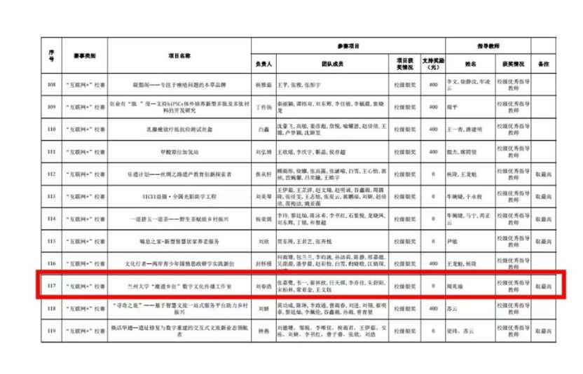
11.2024年兰州大学暑期社会实践优秀实践成果
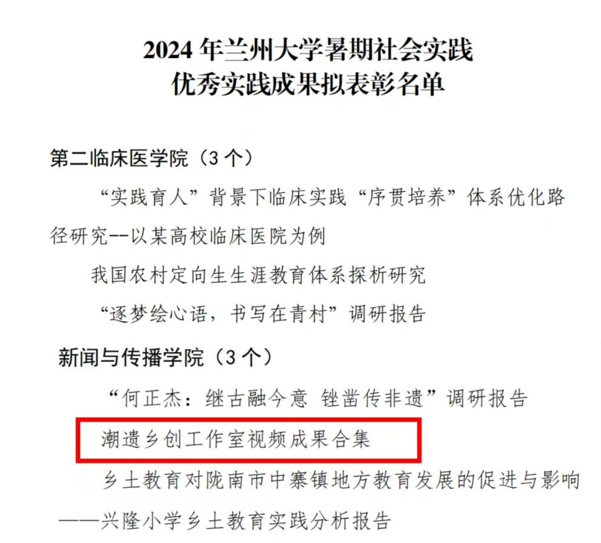
12.2024年兰州大学暑期社会实践优秀团队
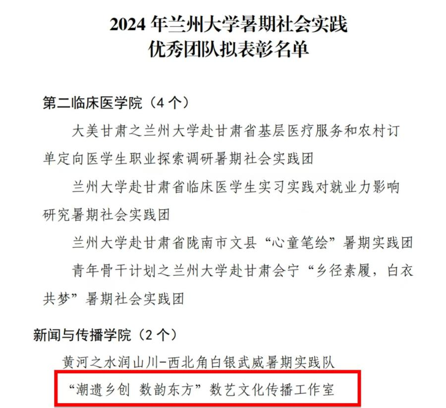
数韵东方系列宣传片联合中国新闻网、央广网、人民日报客户端甘肃频道、甘肃省广播电视总台视听甘肃、中国甘肃网等主流媒体，打造“数+艺”非遗系列IP视频“数韵东方系列宣传片”全网播放累计、点赞评论量已超过200万。
“百年工匠非遗小课堂”黄河文化暑期特别栏目。《庆阳香包》《金城葫芦雕》《陇东剪纸》《兰州泥人》四期黄河暑期特辑，每期小课堂总片长10分钟内，内容主要由双胞胎姐妹“潮宝宝”“遗宝宝”两位非遗传承宝贝用沉浸式的参与方式介绍中国非物质文化遗产的城镇背景、文化由来制作流程和传承保护等内容，后期由甘肃省广播电视总台少儿频道、甘肃省广播电视总台青春调频、兰州市电视台新闻频道、爱兰视频、青春兰大、西北角Corner、抖音、爱奇艺、哔哩哔哩等平台播放，受到中国青年报、中国青年网报道，并荣获全国大学生暑期社会实践十佳团队、优秀暑期社会实践个人（学生）等荣誉。
非遗过大年视频，2025年春节期间，乘着非遗春晚的东风，团队成员分赴甘肃、广东、河北、山西、新疆、浙江七省，在开展调研的基础上，将各地春节期间的特色非遗制作成视频，促进特色技艺的活态化传播，系列视频在中国甘肃网、青春兰大等官方平台上广泛传播。